2.1 Основные уравнения гидродинамики в акустическом приближении
Уравнение
неразрывности
Рассмотрим
для простоты плоскую звуковую волну в трубе постоянного сечения S. Выделим в трубе малый элемент среды
длиной dx (от x до x+dx).
В
произвольный момент времени t
сечение х сместится в результате колебаний на расстояние ξ(х), а сечение х + dx
– на ξ(х + dx)
При
равновесии масса газа в выделенном элементе:
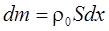.
При
смещении элемента:
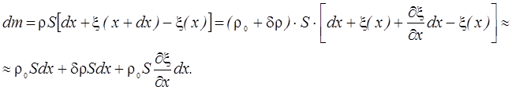
Так
как масса выделенного элемента остается неизменной,
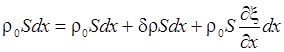.
Отсюда
получаем:
Это уравнение называется уравнением неразрывности.
Уравнение
движения
Запишем
теперь уравнение движения элемента среды, заключенного между плоскостями
x
и
x
+ dx.
Сила,
которая действует на этот элемент, равна:
Масса данного элемента
равна 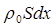,
а ускорение - 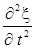.
Согласно
второму закону Ньютона получаем:
Это уравнение
называется уравнением
Эйлера.
Уравнение
состояния
Запишем
теперь уравнение состояния идеального газа, заключенного между сечениями
x
и
x
+ dx
Мы
уже говорили о том, что процессы сжатия и разряжения в звуковой волне являются
адиабатическими. Это связано с тем, что вследствие низкой теплопроводности
воздуха и быстроты изменения давления и плотности при звуковых колебаниях
тепловая энергия не успевает уйти из сжатого элемента газа за время сжатия
(
Уравнение адиабатического процесса имеет вид:
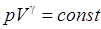,
где 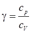 - коэффициент Пуассона. Для воздуха 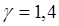.
Если продифференцировать это уравнение, получим:
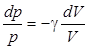.
Элемент газа в трубе между плоскостями x и x + dx имеет объем Sdx, а изменение его объема будет равно 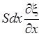.
Постоянное
давление – Р0, а звуковое – p.
Таким
образом, уравнение адиабатического сжатия (разрежения) воздуха в звуковой волне
имеет вид:
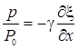
или
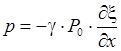 .
С
учетом уравнения неразрывности получаем: